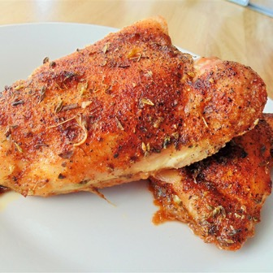

Sicilian Roasted Chicken
Instead of roasting the chicken whole, Sicilian Roasted Chicken calls for a whole chicken cut into eight pieces to maximize the amount of seasoning on each one
Sicilian Roasted Chicken is one to resemble the rotisserie chicken ever body loves so much.
Ingredients
- cooking spray
- 1 whole chicken, cut into 8 pieces
- 1 teaspoon salt
- 1 teaspoon ground black pepper
- 1 teaspoon ground paprika
- 1 teaspoon garlic powder
- 1 teaspoon dried oregano
Directions
- Preheat oven to 425 degrees F (220 degrees C). Grease a 9x13-inch pan with cooking spray.
- Arrange chicken pieces in the baking pan. Sprinkle salt, pepper, paprika, garlic powder, and oregano over both sides.
- Roast in the preheated oven until chicken is browned and the juices run clear, about 1 hour. An instant-read thermometer inserted near the bone should read 165 degrees F (74 degrees C).
Return to top
Return to Home page